오픈쇼케이스
오픈쇼케이스 냉동겸용, 한 대로 합칠지 나눌지 정하는 법
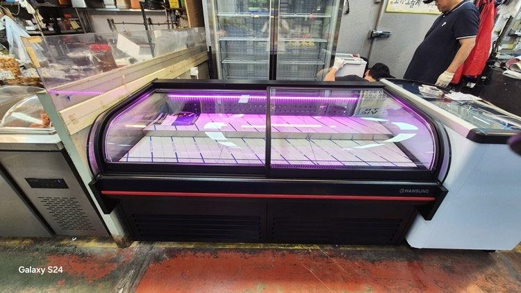
냉동 상품이 몇 가지뿐이라면 오픈쇼케이스를 냉동겸용으로 무리하게 합치기보다, 냉장은 오픈형으로 두고 냉동은 문이 있는 장비를 옆에 붙이는 편이 관리가 쉽습니다. 냉동 비중이 크고 자리가 한 곳뿐일 때만 칸과 냉각 계통을 나눈 겸용 구성을 검토해 보세요.
안녕하세요. 매장 자리에 맞춰 냉장·냉동 장비를 설계하는 한성쇼케이스입니다.
샐러드·반찬 가게나 소형 마트를 준비하시는 사장님들이 오픈쇼케이스 상담 중에 꼭 한 번은 물으십니다.
"아이스크림이나 냉동 만두도 같이 넣고 싶은데, 한 대로 냉장 냉동 다 되게 만들 수 있나요?"
자리가 넉넉하지 않으니 한 대로 해결하고 싶은 마음은 충분히 이해됩니다. 다만 문이 없는 오픈 구조에서 냉동 온도를 지키는 건 냉장보다 훨씬 까다롭고, 잘못 합치면 냉장 칸까지 성에와 온도 흔들림의 영향을 받습니다.
오늘은 오픈쇼케이스를 냉동겸용으로 갈지, 냉장과 냉동을 나눌지 판단하는 기준을 매장 상황별로 풀어 보겠습니다.
1. 오픈 구조에서 냉동이 어려운 이유
오픈쇼케이스는 앞이 열려 있어 매장의 따뜻한 공기가 계속 스며듭니다. 냉장 상품은 에어커튼으로 이 공기를 어느 정도 막아 낼 수 있지만, 냉동 상품은 지켜야 할 온도 차이가 훨씬 커서 같은 구조로는 손실이 커집니다.
들어온 습기는 냉동 구간에서 성에로 바로 얼어붙습니다. 상품 포장에 서리가 앉으면 손님이 오래된 재고로 오해하기 쉽고, 제상 주기가 잦아지면 그때마다 내부 온도가 흔들립니다.
그래서 오픈형 매장에서 냉동 상품이 진열된 모습을 보면 대부분 위에 유리 뚜껑이 달린 평대나 문이 있는 냉동 장비가 따로 서 있습니다.
냉동만큼은 막아 두는 쪽이 운영하기 편하다는 현장의 답인 셈입니다.
2. 합쳐도 되는 경우와 조건
냉동 상품 비중이 크고 장비를 놓을 자리가 한 곳뿐이라면 겸용 구성을 고민해 볼 만합니다. 이때는 냉장 칸과 냉동 칸을 단열 칸막이로 확실히 나누고, 냉각 계통도 각각 따로 두는 설계가 기본입니다.
냉동 칸은 손님이 집기 쉬운 아래쪽에 두되 앞을 유리 뚜껑이나 문으로 막는 방식이 많이 쓰입니다. 오픈형의 집기 편한 장점은 냉장 칸에서 살리고, 냉동 칸은 닫힌 구조로 온도를 지키는 식입니다.
- 냉장·냉동 칸 사이 단열 칸막이
- 칸별로 분리된 냉각 계통
- 냉동 칸 앞 유리 뚜껑 또는 문
- 칸별 온도를 따로 보는 표시창

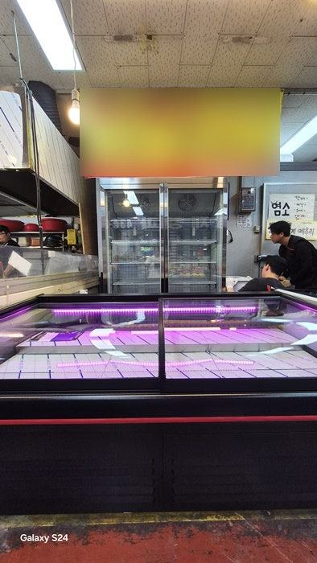
3. 나눠 배치하는 쪽이 나은 매장
냉동 품목이 아이스크림 몇 종, 냉동식품 몇 가지 수준이라면 오픈 냉장 쇼케이스 옆에 문이 달린 냉동 장비를 붙이는 편이 고장 위험도 낮고 수리도 간단합니다.
한쪽이 멈춰도 다른 쪽 영업은 이어 갈 수 있으니까요.
외관 색상과 높이를 맞춰 제작하면 두 대를 나란히 놓아도 한 세트처럼 보입니다. 손님 동선에서는 냉장 상품을 먼저 지나고 계산대 가까이에 냉동을 두면 녹는 시간도 줄어듭니다.
자리가 좁다면 냉동 장비를 오픈쇼케이스 끝에 직각으로 붙이는 'ㄱ'자 배치도 방법입니다. 진열 길이는 지키면서 계산대 쪽 공간을 덜 차지합니다.
4. 마감 후 관리까지 생각하기
오픈 구조는 영업이 끝난 뒤에도 냉기가 빠져나갑니다. 겸용이든 분리형이든 냉장 칸에는 야간 차단막을 쓸 수 있는 구조인지, 에어커튼 바람 세기를 조절할 수 있는지 미리 확인해 두면 전기 사용과 성에 관리가 훨씬 편해집니다.
냉동 칸 성에는 쌓인 뒤에 긁어내기보다 문 여닫는 시간을 줄이고 상품을 송풍구 앞에 막아 두지 않는 습관으로 미리 줄이는 것이 낫습니다.
체크리스트
- 냉동 상품 종류와 진열 비중
- 장비를 놓을 수 있는 자리 수
- 칸막이·냉각 계통 분리 여부
- 냉장 칸 야간 차단막 사용 가능 여부
- 냉동 칸 앞 문 또는 뚜껑 구조
냉장 진열대와 냉동고를 나눠 맞춘 출고 사례
냉장 진열과 냉동 보관을 한 대로 합치지 않고 따로 맞춘 매장 사례입니다. 손님이 보는 진열은 블랙 외관에 곡선 앞문을 단 평대 쇼케이스로, 재고 보관은 여닫이 2도어 스텐 냉동고로 나눴습니다.
두 장비 모두 팬으로 냉기를 돌리는 간냉식이라 유리와 내부에 성에가 덜 생기고, 냉동고는 안쪽 선반을 10개로 구성해 재고를 칸별로 나눠 둘 수 있게 했습니다.
한쪽이 점검에 들어가도 다른 쪽은 그대로 쓸 수 있는 구성입니다.
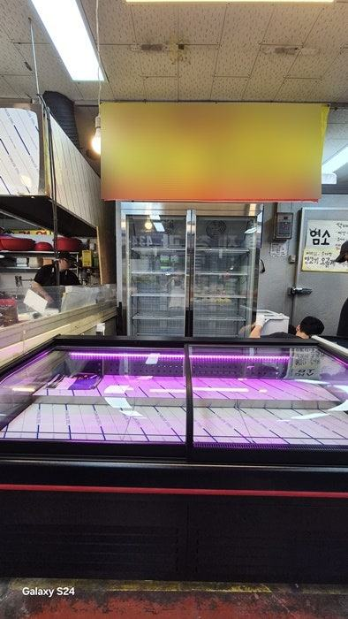
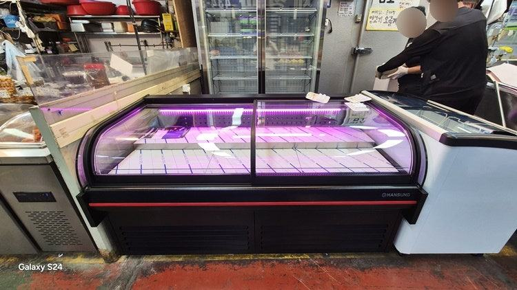
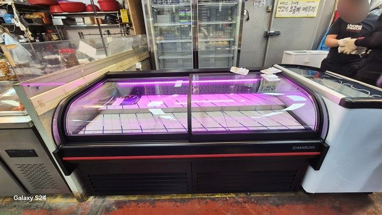
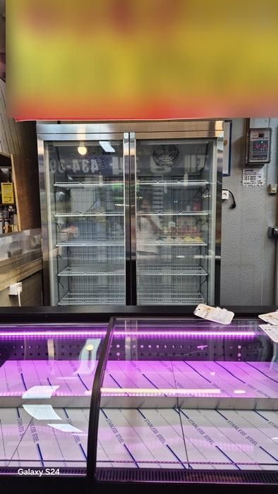
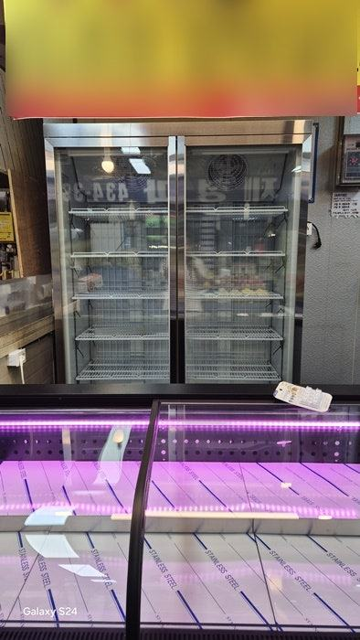
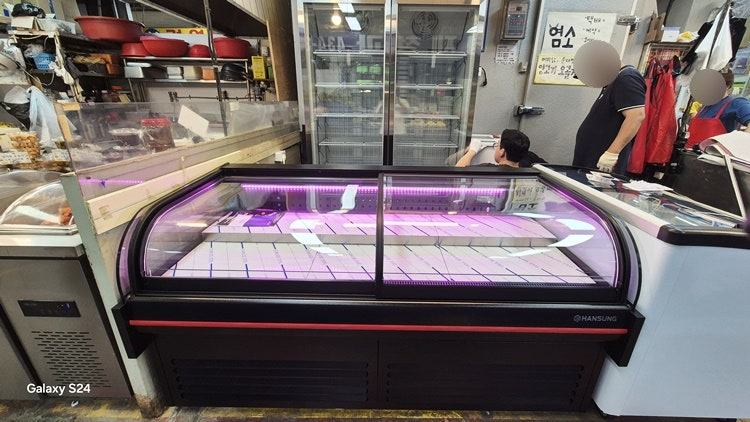
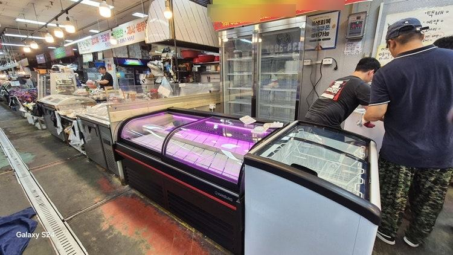
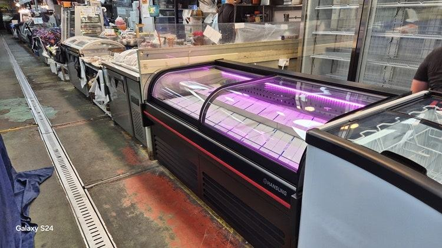
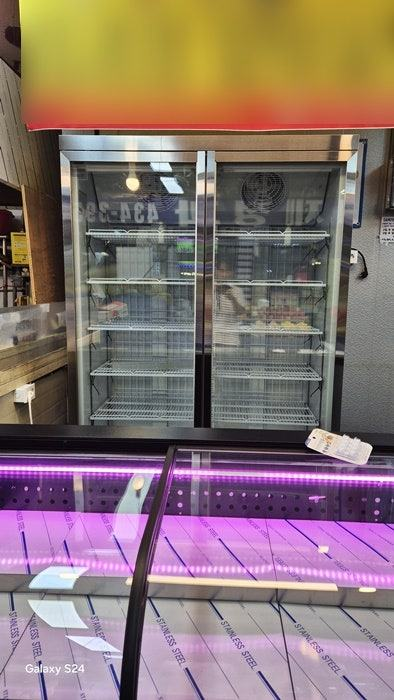

| 구분 | 평대 쇼케이스 | 업소용 냉동고 2도어 |
|---|---|---|
| 규격 (가로×세로×높이) | 1800 × 900 × 900 mm | 1340 × 760 × 2000 mm |
| 디자인·소재 | 모던 블랙, 곡선 앞문형 | 스텐, 여닫이 2도어 |
| 내부 조명 | 핑크 | 백색 |
| 냉각 방식 | 간냉식 | 간냉식 |
| 추가 옵션 | 저울 받침대 | 내부 선반 10개 |
자주 묻는 질문
오픈쇼케이스 한 대를 계절에 따라 냉장, 냉동으로 바꿔 쓸 수 있나요?
냉장과 냉동은 필요한 냉각 성능과 단열 구조가 달라 설정만 바꿔 쓰는 방식은 권하지 않습니다. 계절 상품이 있다면 칸을 나눈 구성이나 별도 장비를 함께 보시는 게 안전합니다.
겸용으로 만들면 냉장 칸 온도도 불안정해지나요?
칸막이와 냉각 계통이 제대로 분리되지 않으면 영향을 받을 수 있습니다. 그래서 겸용 제작은 칸별 냉각을 따로 두는 설계를 전제로 상담합니다.
두 대로 나누면 매장이 지저분해 보이지 않을까요?
외관 색상과 높이, 조명을 맞춰 제작하면 나란히 놓아도 한 줄로 이어진 진열처럼 보입니다. 설치 자리 치수를 알려 주시면 배치안을 함께 잡아 드립니다.
매장 조건에 맞춰 만드는 한성쇼케이스
원하시는 제품 사진과 설치할 공간 사진만 보내 주셔도 매장에 맞는 구성을 추천해 드립니다.
- 전국 240여 개 A/S 전담 센터 운영
- 본사 대량 자재 매입으로 품질 대비 합리적인 가격
- 유럽제·삼성 냉각 콤프레셔 적용
- 국내 최초 쇼케이스 전문 디자이너 상주
매장 폭과 원하는 진열 구성을 알려 주세요. 실측과 견적을 안내해 드립니다.
031-986-2458